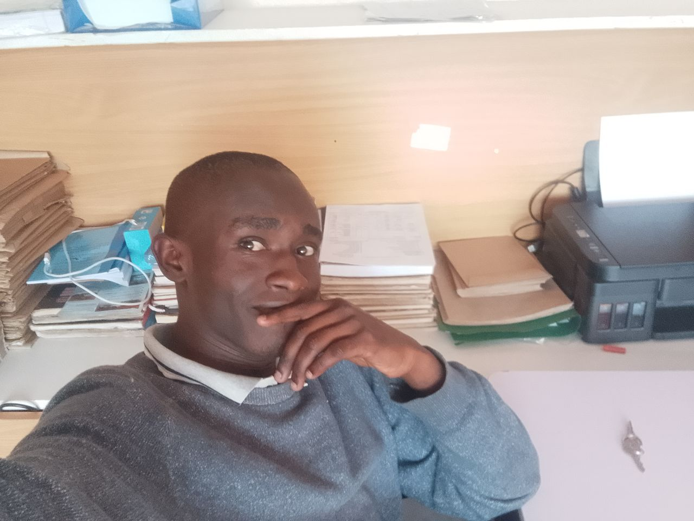

We will get there in just a moment. But first, let me welcome you back.
Here is Lewis' picture as it is been displayed to you.That smiling charming guy is him.
These here are some of my hobbies. Will love if you take a look at them. All you have to do is click on that down arrow key,and wollah:
Iam a born-again christian currently fellowshipping at The Full Gospel Churches of Kenya,in Athena,Thika,Kenya.I got saved while i was a secondary school student in Giakanja Boys in Form 3.
Though this is about to change soon.
Then on 7th May 2023, i got baptised in the name of God the Father,God the Son,and God the Holy Spirit at Full Gospel Makongeni Church,and confirmed in 2025 with a baptism certificate.
Some of the foods that i love include:
As a human being,you have to set clear and direct standards to enable you venture and adapt in a fast-changing world.
This includes setting boundaries,limits,and clear navigational routes/panes for your life.
Here are some of the dislikes:
This are my standards. They are non-negotiable,and firmly set/anchored to my values.